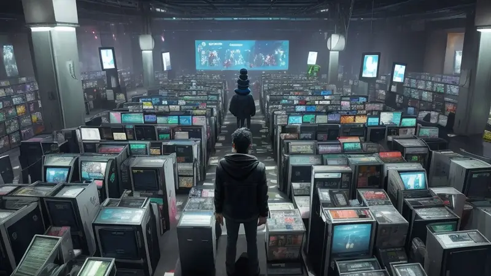
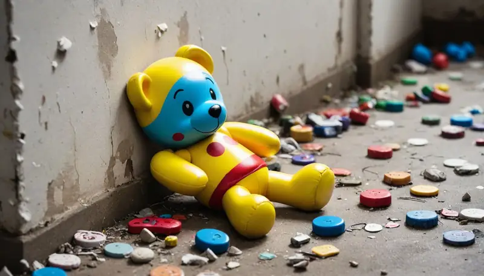
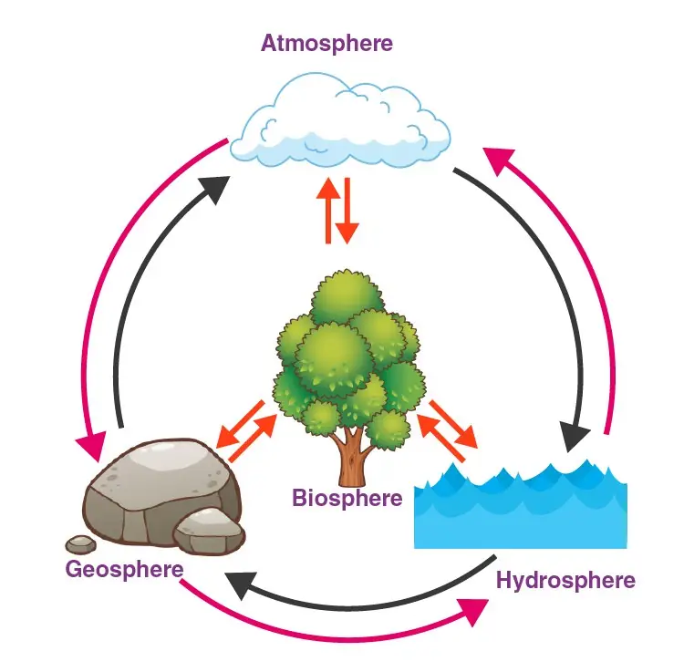
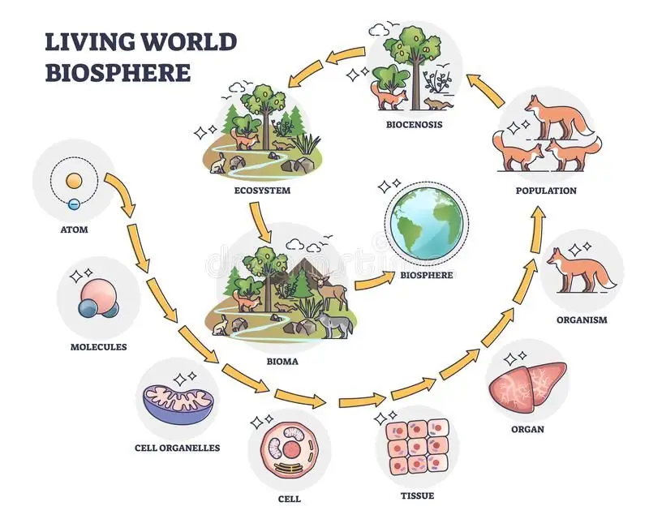
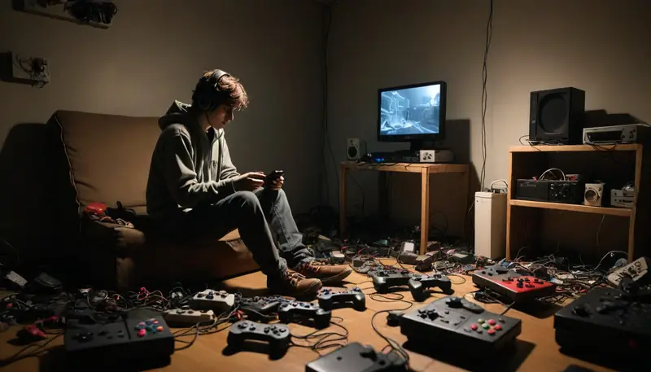
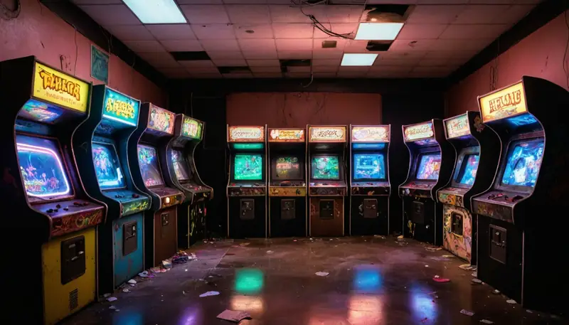

No great games in sight, nothing truly excites me
This will be a rant. It's something that bothers me to no end.
I'm in my 30s and I have played games since early childhood. Despite having tried possibly hundreds if not a few thousand titles in total so far - on many platforms be it consoles, PC, handhelds, smartphones, web based, tabletop, cards - there are not a single game that I'm truly fully satisfied with or that I could recommend to anyone without at least one major caveat.
Either it's a flaw, a limitation, a bug, general or specific technical problems, lack of content, partially poor design, awful business decision(s), developer issues, content mentality, subject matter/theme, style, or very long development times.

I also monitor a feed of new releases on multiple platforms and despite tens of releases every week it's still incredibly rare that anything excites me or gets me hyped. It's gotten so predictable that I can identify the problem just from description texts, a screenshot or 10 seconds of gameplay footage.
The problem isn't that video games aren't for me nor that I have "outgrown" them. The problem is that developers both new and old are still stuck in the stone ages when it comes to game design; they fall for the same traps, mistakes and ignorance again and again.
The most common project of all - a throwaway toy
Out of all, the biggest problem is the mentality - how games are seen, thought about, why they are made and how they are designed.
Most games can be boiled down to a "throwaway toy" or "consumable/discardable thrill". There is barely any effort or even cognition to ensure longevity and full utilization of the project and its assets.

A throwaway game is often built through blind copying of existing games, adhering to moldy traditions whose origins were often not well thought through or were a result of the limitations of the time.
The developer doesn't see past the frame they've trapped themselves in, they do not think outside the box, they're stuck at the bottom of a well unaware of the possibilities above. Most effort is fruitlessly spent on trying to innovate or fix something that had a poor foundation anyway. Basically they're trying to polish a ball of crap - it's still crap no matter how shiny you make it!
Developers don't value their time and effort spent on making games through their actions, even if they claim whatever they did "was totally worth it".
This becomes evident when I look at how much time and effort is spent on making assets, systems, materials for the project that is driven by this throwaway mentality - weeks, months, years get spent on content and experiences that can be consumed in a few seconds, minutes or hours and on top of that the experience is narrow, restricted, shallow and one dimensional.
In terms of making games long term to make people happy or running a game business sustainably this is a disaster - not only is the creation and flow of goods bottlenecked, but those goods are also not flexible at all, making them less valuable to the player.
Why is a throwaway game so common?
Developers still view the creation of video games through the lens of making a movie, forcibly trying to cram a square peg into a round hole in regards to making something that is supposed to be liberating and interactive become constrained and tightly scripted instead, completely disregarding how counterintuitive this is.
Usually the creation of a project is approached with the idea of constructing an experience based on a specific situation and recreating it while putting the player on scripted rails to experience it. This is inherently bad design.
It is the equivalent of a crappy teacher or parent that tells you to sit down and obey them without question and expect you to have a profound moment of learning. It doesn't work; this infringes on the player's fundamental human need for freedom to be curious, to play/explore and to fail without fear.
There is a far better method.
Something that hasn't been utilized enough nor fully.
And it's mostly a matter of reorganizing how a game and its content is built, reframing the mindset that drives it. It is equally the same amount of work as how things are done the old stupid way, but the potential, value and flexibility afforded by it are far better in every way.
The better alternative - framework driven projects
Instead of trying to recreate a specific situation as a starting point, build a framework where that moment can happen naturally. Create an environment that sets the player to make that situation happen by coincidence. Enable the possibility of any variation/mutation of that situation to happen.

Make it possible for even things to happen that you did not anticipate but are cool and welcome regardless. Create emergent systems, no matter how basic or rudimentary, to take precedence over solutions that just skip to making that situation directly.
Examples:
- Don't make a desert. Instead have an area with lots of sand, harsh sunlight and high heat that will result in a desert.
- Don't make a forest. Instead have an area with fertile soil, humidity, gentle sunlight, an atmosphere and compatible flora/fauna.
- Don't make snowy plains/tundra. Instead create an area that has humidity, precipitation (rain), cold temperature, weak sunlight.
- Don't make a rocky lava area. Create terrain with volcanic activity that generates ash and lava, hard but brittle stone material, seismic activity that creates/shifts the rocky material and low humidity, ash clouds that block sunlight.
- Don't create prefabs - create the source elements that make up the prefabs and then fuse them together through basic if/else systems that assemble these final result prefabs like a custom sandwich.
The point is to focus on the source/origin of a thing - not the final result. Notice what are the elements or forces that led to the creation of the final result. Identify their relationships and what comes before whom, what is first and what is second, etc.

This method allows the instances of a forest, desert, tundra, lava lands to be far more varied and flexible - even opening the possibility of hybrid biomes that are little bit of both or a crazy mix that naturally results in an unexpected cool new biome.
Even within singular biomes the system could create different severity of a particular biome, like a lush forest vs sparse forest by altering the available water or soil in the area.
- Don't make pre-made unique characters. Make a modular character/paper doll that can be equipped with any limbs types, facial features, clothing, accessories, with any colors or patterns. Have their name be generated using a list of words/letters, have their background/personality be rolled from a mix of options that will define their behavior/style.
- Don't make scripted campaigns - they only offer one experience and even that one is a very narrow one. Instead, make a campaign generator that may mix and combine content freely, allowing for maximum reuse of content, more emergent gameplay and exponential variety. Don't make a linear sequence of levels - opt for an open world design instead where levels can be played in any order and they can be shuffled around with each campaign.
Just be clear, this doesn't require an intricate universe simulator. All that is needed is a list of things/elements/building blocks with parameters/stats and a simple if/else tree with a little bit of random(1,9) function thrown in. Meanwhile the content itself is drawn in paper doll style - everything is made up from modules/components/add-ons and often greyscale, with the program applying a color tint during the game directly.
It is possible to create incredible results with very little content, often even a small pool of content can provide multiple times more play hours than what the old throwaway approach could. Best of all, the content and structure of a game could support emergent gameplay that is far more interesting and satisfying than any scripted gameplay could ever achieve.
Small throwaway games are not the future
Besides the content utilization aspect and how to organize the campaign/metagame, the age of small games is coming to an end.
The future will be dominated by large games that render all small games obsolete because they both already provide whatever the small game does but also goes above and beyond the limits of said small game, offering far more value and being worthy of investing oneself into it.

With throwaway games, it is difficult to justify committing to mastering it since it is a dead end - the skills and knowledge specific to that game are only applicable within it and they cannot be used elsewhere.
I've found no motivation to take a game seriously if I know its content and campaign are limited to a scripted Simon Says type of affair with no room to mix it up or any possibility to step outside the script.
If the game offers a mere single playthrough with any subsequent playthrough being a replay of the first run, then there is no point - I already know the story and twists, I'm mainly there to stroke the developers own ego by completing the same crap with more efficiency. There is no emergent gameplay, no narrative interest nor any promise to expand further than what the current closed world offered.
As a design model it sucks for many reasons.
It takes years for a developer to build one dimensional content that the player consumes within seconds and even then only to leave them unsatisfied.
The content was playable in one very specific narrow way dictated by the developer, leading to a hollow samey boring experience no matter how many times I play it, nor will I be finally satisfied after waiting potentially for years for the game to come out, only to find myself again feeling empty because the game had shit design and hope that the next one won't make the same mistake again - potentially for several more years.
Throwaway games have worse profit potential too
Another stupid part is that this throwaway game business model isn't even beneficial to the developer. They take forever to make a game that only gives momentary hollow entertainment that is monetized only once - often at a discount too. Even then the profits are uncertain and only have an artificially narrow window of opportunity to market and sell the game.
Worse yet, the throwaway model can often be so shallow that watching a YouTube playthrough or 10 minutes of gameplay can actually be a sufficient experience to be "done" with the game, eliminating the desire to play it myself. This even applies to games that are free too.
I can often just take a glance at a throwaway game and be like "I get it" with no desire to play it or pursue it any further.

Throwaway games are also contributing to the common perception in society that games are nonsense, that they're useless and that they turn people into zombies, that games are not art nor that they have any real life benefit to them.
And unfortunately this is true for most games out there. They were designed with the mindset that doesn't see games as anything more than throwaway thrills, hence the prevailing paradigm amongst the older generation and those that have avoided video games so far.
Once people making games recognize that games have the potential to be more than throwaway toys, then they will greatly benefit from designing products that aren't a dead end hollow experience but one of rich variety, spontaneity, emergent gameplay and with infinite expansion potential.
Game creators will also benefit from a far healthier long term careers, more profits, more stability and an equal effort-vs-outcome balance, giving players more gameplay with less content required to sustain it, while any additional multiple gameplay value and length exponentially.
Talk about it
Questions, disagreements and ideas of your own are all welcome. Discuss this article with other readers on the Reactorcore Games Discord, follow new articles and dev news on Patreon, or write to me directly.